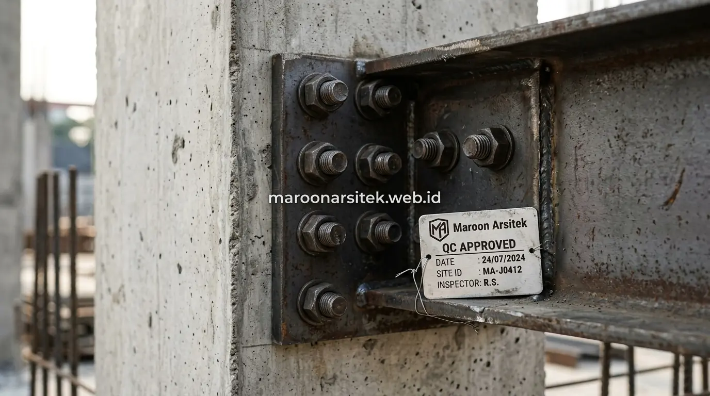

Pemilik usaha yang berencana membangun gudang logistik, cafe kekinian, ruko bertingkat, atau kantor operasional sering dihadapkan pada dilema krusial: memilih struktur baja berat (*Wide Flange*) atau konstruksi beton bertulang konvensional. Keputusan ini sangat menentukan kecepatan perputaran modal usaha (*cash flow*), besaran biaya investasi awal, serta fleksibilitas tata ruang di masa depan. Melalui layanan jasa kontraktor bangunan profesional dari Maroon Arsitek, Anda mendapatkan kajian rekayasa struktur yang presisi demi keberlanjutan bisnis jangka panjang.
Jasa Konstruksi Bangunan Komersial untuk Gudang dan Cafe
Karakteristik operasional gudang dan cafe menuntut pendekatan desain struktur yang sangat berbeda:
- Konstruksi Gudang (Warehouse): Membutuhkan bentang ruang bebas kolom (*clear span*) seluas 15 hingga 30 meter agar mobilitas rak penyimpanan vertikal dan manuver forklift tidak terhalang pilar tengah.
- Konstruksi Cafe & Restoran: Menitikberatkan pada estetika fasad arsitektur modern, tata pencahayaan fleksibel, serta integrasi area indoor-outdoor yang menarik minat pengunjung milenial.
- Efisiensi Alur Logistik: Merancang dermaga bongkar muat (*loading dock*) dengan perkuatan plat lantai beton (*floor hardener*) yang tahan gesekan beban berat.
Perbandingan Struktur Baja dan Beton untuk Bangunan Komersial
Kedua sistem struktur memiliki keunggulan komparatif masing-masing yang dapat disesuaikan dengan target bisnis:
- Kecepatan Pemasangan: Struktur baja 40% lebih cepat karena kolom dan kuda-kuda atap difabrikasi di workshop terstandarisasi, sedangkan beton membutuhkan waktu pengeringan (*curing*) bertahap di lapangan.
- Bobot Sendiri Bangunan: Baja memiliki rasio kekuatan terhadap berat yang jauh lebih tinggi, sehingga mengurangi beban pondasi tanah di bawahnya.
- Ketahanan terhadap Api & Korosi: Beton secara alami sangat tahan terhadap rambatan api dan cuaca basah, sementara baja membutuhkan aplikasi cat proteksi api (*fireproofing*) dan cat antikarat.

Efisiensi Biaya dan Waktu Konstruksi dengan Material Baja
Material baja menawarkan akselerasi *time-to-market* yang sangat menguntungkan bagi para pengusaha:
- Pekerjaan pondasi di lahan dapat berjalan paralel bersamaan dengan proses fabrikasi pemotongan dan pengelasan balok baja di pabrik.
- Begitu pondasi selesai, perakitan struktur baja dengan sambungan baut mutu tinggi (*high strength bolt*) hanya memakan waktu hitungan minggu.
- Bisnis dapat dibuka lebih awal, menghasilkan pendapatan operasional lebih cepat, serta menekan biaya sewa lahan selama masa konstruksi.
Ketahanan Struktur Beton untuk Bangunan Komersial Jangka Panjang
Struktur beton tetap menjadi primadona untuk bangunan bertingkat padat aktivitas:
- Insulasi Suara & Getaran: Plat lantai beton tebal meredam kebisingan antar lantai kantor dan getaran mesin industri secara efektif.
- Biaya Perawatan Minimal: Tidak memerlukan pengecatan ulang antikarat berkala, menjadikannya opsi paling hemat biaya pemeliharaan untuk ruko komersial sewaan.
Pemilihan Kontraktor Konstruksi Bangunan Komersial yang Tepat
Memilih mitra pelaksana yang kompeten memastikan proyek selesai tanpa kendala hukum maupun teknis:
- Legalitas Izin Konstruksi Lengkap: Memiliki Sertifikat Badan Usaha (SBU) resmi dan tenaga ahli teknik sipil bersertifikasi SKA.
- SOP Keselamatan Kerja (K3): Penerapan standar K3 ketat saat pengangkatan alat berat (*mobile crane*) di lokasi proyek komersial padat lalu lintas.
- Transparansi SPK & Termin Pembayaran: Rincian RAB transparan yang mengunci harga material hingga serah terima kunci.